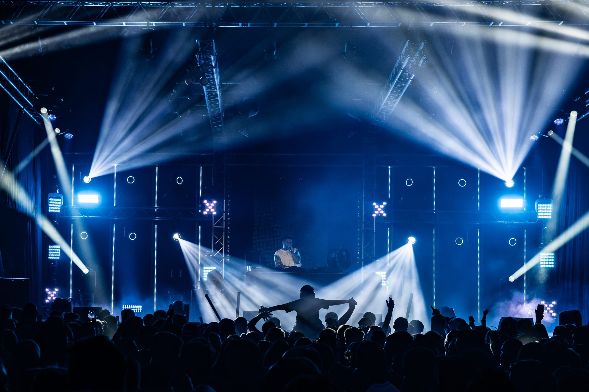

GTF Franzen / Licht en video CH 03
Licht
en video
Podiumlicht, siteverlichting en LED-wanden. Ontworpen voor uw programma en live bediend.
Licht bepaalt hoe een avond voelt, en hoe een terrein er in het donker uitziet.
Van een podium vol moving heads, beams en strobes tot de verlichting van een heel terrein. Met onze LED-wanden laten we visuals, sponsors of livebeelden zien.
Wat u krijgt
- Lichtontwerp en programmering
- Moving heads, washes, beams en strobes
- Siteverlichting
- LED-wanden en visuals
Foto: Highlite
Partner
Samen met MATRIX E.I.L.
Voor lichtontwerp, LED en visuals werken we samen met MATRIX E.I.L. uit Bocholtz.
Naar MATRIX E.I.L. ↗
Contact
Uw
Uw
evenement?
Vertel ons wat u van plan bent. U krijgt antwoord van de mensen die het ook gaan bouwen.
info@franzenbocholtz.nl